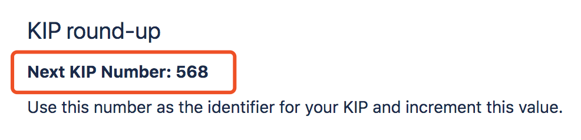
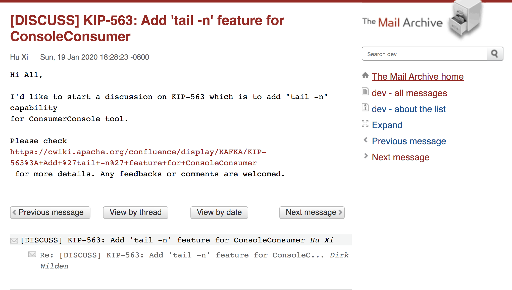
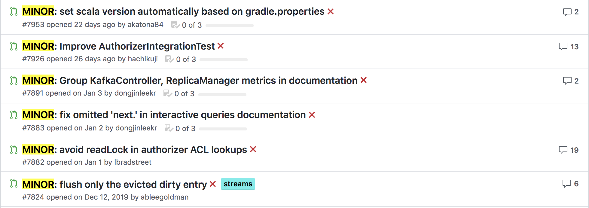

- 00 导读 构建Kafka工程和源码阅读环境、Scala语言热身.md
- 00 开篇词 阅读源码，逐渐成了职业进阶道路上的“必选项”.md
- 00 重磅加餐 带你快速入门Scala语言.md
- 01 日志段：保存消息文件的对象是怎么实现的？.md
- 02 日志（上）：日志究竟是如何加载日志段的？.md
- 03 日志（下）：彻底搞懂Log对象的常见操作.md
- 04 索引（上）：改进的二分查找算法在Kafka索引的应用.md
- 05 索引（下）：位移索引和时间戳索引的区别是什么？.md
- 06 请求通道：如何实现Kafka请求队列？.md
- 07 SocketServer（上）：Kafka到底是怎么应用NIO实现网络通信的？.md
- 08 SocketServer（中）：请求还要区分优先级？.md
- 09 SocketServer（下）：请求处理全流程源码分析.md
- 10 KafkaApis：Kafka最重要的源码入口，没有之一.md
- 11 Controller元数据：Controller都保存有哪些东西？有几种状态？.md
- 12 ControllerChannelManager：Controller如何管理请求发送？.md
- 13 ControllerEventManager：变身单线程后的Controller如何处理事件？.md
- 14 Controller选举是怎么实现的？.md
- 15 如何理解Controller在Kafka集群中的作用？.md
- 16 TopicDeletionManager： Topic是怎么被删除的？.md
- 17 ReplicaStateMachine：揭秘副本状态机实现原理.md
- 18 PartitionStateMachine：分区状态转换如何实现？.md
- 19 TimingWheel：探究Kafka定时器背后的高效时间轮算法.md
- 20 DelayedOperation：Broker是怎么延时处理请求的？.md
- 21 AbstractFetcherThread：拉取消息分几步？.md
- 22 ReplicaFetcherThread：Follower如何拉取Leader消息？.md
- 23 ReplicaManager（上）：必须要掌握的副本管理类定义和核心字段.md
- 24 ReplicaManager（中）：副本管理器是如何读写副本的？.md
- 25 ReplicaManager（下）：副本管理器是如何管理副本的？.md
- 26 MetadataCache：Broker是怎么异步更新元数据缓存的？.md
- 27 消费者组元数据（上）：消费者组都有哪些元数据？.md
- 28 消费者组元数据（下）：Kafka如何管理这些元数据？.md
- 29 GroupMetadataManager：组元数据管理器是个什么东西？.md
- 30 GroupMetadataManager：位移主题保存的只是位移吗？.md
- 31 GroupMetadataManager：查询位移时，不用读取位移主题？.md
- 32 GroupCoordinator：在Rebalance中，Coordinator如何处理成员入组？.md
- 33 GroupCoordinator：在Rebalance中，如何进行组同步？.md
- 特别放送（一）经典的Kafka学习资料有哪些？.md
- 特别放送（三）我是怎么度过日常一天的？.md
- 特别放送（二）一篇文章带你了解参与开源社区的全部流程.md
- 特别放送（五） Kafka 社区的重磅功能：移除 ZooKeeper 依赖.md
- 特别放送（四）20道经典的Kafka面试题详解.md
- 结束语 源码学习，我们才刚上路呢.md
特别放送（二）一篇文章带你了解参与开源社区的全部流程
你好，我是胡夕。从课程上线开始，我就经常被问到这样一个问题：“我想参与到Apache Kafka社区，应该怎么做呢？”今天，我就为你梳理一下参与Apache开源社区，特别是Kafka社区的最佳实践步骤。
参照着这套最佳实践，你能够轻松地参与到社区的日常开发中，甚至是成为社区Contributor中的一员。即使你暂时不打算加入社区开发，在你遇到Kafka难题时，这套实践法则也可以帮助你快速地找到适当的资源，节省你的时间成本。比如说，在诊断很多Kafka问题时，社区邮件组和Jira列表往往是比搜索引擎更好的工具。
大体上说，我们参与开源社区通常需要完成5步，如下图所示：

虽然我在上图为每一步都标记了序号，但这并不表示它们之间是有先后关联顺序的，你完全可以按照任意顺序去实现它们。接下来，我就带你一步步梳理这五个方面。
- 精通Kafka源代码
你需要非常了解Kafka的源代码，毕竟，我们参与到开源社区的目的就是贡献我们自己的代码。不管是要修复Bug，还是想要为Kafka新增任何功能，你都要提前了解相关的源码才能进行。我们目前的这门课就是帮你完成此事的。认真学完这个课程，你至少可以对Kafka服务器端的源代码有一个深入而广泛的了解，为你后续贡献这部分代码奠定基础。
- 订阅Kafka邮件组
在我看来，这是参与开源社区最重要的一步，没有之一！订阅邮件组是及时了解社区动态最快速、最有效的手段。Kafka邮件组的活跃程度在整个Apache社区名列前茅。
根据Apache社区2018年度报告，我们可以知道，Kafka的两个邮件组users和dev分别排在最活跃邮件组Top5的第4名和第2名，足见社区的人气之高。
Kafka邮件组主要包含两个：[email protected]和[email protected]。Kafka用户在使用过程中碰到任何问题，都可以向第一个邮件组发送邮件询问，而第二个邮件组主要用于进行Kafka开发的各种讨论。就我个人的经验而言，dev这个邮件组的含金量要更高一些，因为上面有很多针对Kafka设计以及改进建议的讨论和交流，非常值得一看。
订阅这些邮件组的方法很简单，你需要给这两个邮件组对应的订阅邮件地址发送邮件。比如你要订阅dev邮件组，那么可以发送一封名为“Subscribe to Kafka dev mailing list”的邮件给[email protected]，这样你就每天都能收到dev邮件组的邮件了。同理，你需要发送邮件给[email protected]来订阅users邮件组。
订阅成功之后，你就可以给users和dev邮件组发送邮件、询问问题了。不过，你要记住这两个邮件组的区别。
- users：讨论Kafka使用方面的问题。
- dev：讨论Kafka开发方面的问题。
需要注意的是，这两个邮件组每天的邮件数量非常多，如果你觉得不胜其烦，可以取消订阅。取消方法与订阅方法类似，只是你要发送邮件给对应的取消订阅邮件地址，users对应的取消订阅邮件地址是[email protected]；dev对应的是[email protected]。
- 开通Jira权限
当前，Kafka使用Jira进行项目管理，负责Kafka的Bug管理和新功能提案的追踪。如果你要参与到Kafka社区，Jira权限是不能不开通的。开通权限是什么意思呢？这主要是指你要申请一个Jira的账号。账号申请完成之后，你还需要发送邮件给[email protected]，申请将你的Jira ID加入到Kafka的Contributor列表中。只有Jira ID被加入到Contributor列表，你才有资格认领Jira ticket，也就是我们常说的修Bug。
- 开通KIP权限
在之前的特别放送里，我提到过KIP，也就是Kafka新功能提案。通常情况下，你不需要任何权限，就能浏览这些新功能提案。不过，如果你要提交自己的提案，那你就必须要提前申请KIP账号权限了，具体的做法是向[email protected]邮箱发送申请邮件。
我举个例子，你可以编写一封邮件，名字为“Granting permission for Create KIP”，正文是“Please grant permission for Create KIP to wiki ID: <your_id>”，然后发送给dev邮件组。大约1到2个工作日之后，你会收到一封邮件，告知你的ID已被赋予了权限。
这个时候，你再次进入到KIP页面，点击Create KIP按钮，按照页面目录结构撰写新功能提案即可。值得注意的是，一旦你创建了自己的提案页面，在主KIP页面，你还需要修改两个地方。
首先，你必须更新下一个KIP序号，如下图所示：

其次，你必须把你的提案页面地址增加到KIPs under discussion表格下，并注明状态Under Discussion。
除此之外，你还需要发送一封邮件给dev邮件组，向社区声明你创建了一个KIP，想要发起新一轮的讨论。下图展示的是一封我之前负责某KIP时发起的讨论邮件：

把这些都做完之后，剩下的事情就是等待社区开发者对此KIP的讨论了，你需要做的就是随时回答大家提出的各种问题，然后向大家解释为什么这个KIP是很重要的功能。
- 提交Pull Request（PR）
参与社区的最后一步，也是最关键的一步，就是向社区提交我们自己的Pull Request，即PR。目前社区的PR大体分为两类：普通PR和MINOR PR。
我先说下MINOR PR。顾名思义，MINOR PR就是改动微不足道的那类PR，比如，你在阅读Kafka源码注释时，发现某个单词拼写错了，或者是变量命名不清晰，那么针对这类问题，你就可以直接给社区提一个PR。这类PR在命名时，社区有个约定俗成的规范就是，它们要以“MINOR：”开头，如下图所示：

给社区贡献MINOR PR是不需要事先创建Jira ticket的，这也是这类PR的一个特点。
另一类PR就是普通PR了。要提交这类PR前，你必须保证要修复的问题在Jira中存在对应的ticket，并且最好确保Jira的Assignee是你自己。如果Assignee不是你自己，那说明社区中有其他人正在研究这个问题，你最好不要抢别人家的劳动果实。如果你知道了如何修复该问题，可以在对应的Jira ticket下留言礼貌地询问是否可以把这个ticket让你来修复。如果原Assignee同意了你的请求，你再提交自己的PR也不迟。
一旦提交了PR之后，你的代码会被社区开发者进行Code Review，并提出很多修改意见，你需要小心谨慎地对待这些Comment并处理它们。当Committer认为你的代码满足了要求之后，他们会留言LGTM的字样，表明Look Good To Me，然后通知你代码可以被合并到主干分支了。这个时候，你就正式成为了Apache Kafka的Contributor。
总结
今天，我给你介绍了参与Kafka社区的最佳实践。我希望在学完这节课之后，你可以根据这个教程一步一步地实现成为Kafka Contributor的目标，甚至是成为下一个社区Committer！当然，每个人自身的实际目标和期望不同，你也可以有针对性、有限度地参与到社区中，以满足你的实际需求。
最后，我还想跟你分享一个国人参与开源社区的建议：不要只和国内开发者进行对话，要多多和国外开发者进行交流合作。我发现，很多国内开发者只会去找Kafka社区中的华人帮忙解决问题，其实，社区中的国外开发人员也是非常友善和易于沟通的，我建议你也多和他们聊一聊，相信你会有更多不一样的收获。
课后讨论
你想参与Kafka社区甚至是开源社区的初衷，或者你过往参与开源社区的一些有趣经历，你觉得做这些事情最大的意义或价值是什么？
欢迎你在留言区畅所欲言，跟我交流讨论，也欢迎你把今天的内容分享给你的朋友。
© 2019 - 2023 Liangliang Lee. Powered by Vert.x and hexo-theme-book.